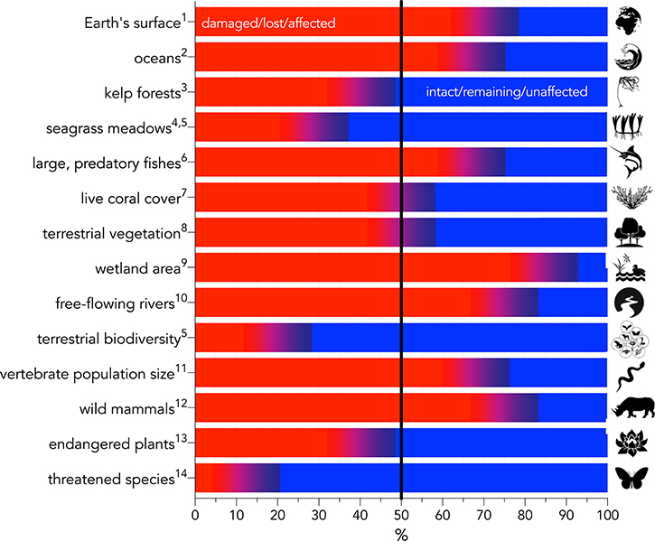

Created Monday 25 January 2021 (21-01-25_10-11-48)
@2021 @article
Bradshaw C. J.A , Ehrlich P.R., Beattie A., Ceballos G., Crist E., Diamond J., Dirzo R., Ehrlich A.H., Harte J., Harte M. E., Pyke G., Raven P. H., Ripple W. J., Saltré F., Turnbull C., Wackernagel M. and Blumstein D.T. (2021) Underestimating the Challenges of Avoiding a Ghastly Future. Frontiers in Conservation Science 1:615419. doi: 10.3389/fcosc.2020.615419
https://www.frontiersin.org/articles/10.3389/fcosc.2020.615419/full
Full Text
We report three major and confronting environmental issues that have received little attention and require urgent action. First, we review the evidence that future environmental conditions will be far more dangerous than currently believed. The scale of the threats to the biosphere and all its lifeforms—including humanity—is in fact so great that it is difficult to grasp for even well-informed experts. Second, we ask what political or economic system, or leadership, is prepared to handle the predicted disasters, or even capable of such action. Third, this dire situation places an extraordinary responsibility on scientists to speak out candidly and accurately when engaging with government, business, and the public. We especially draw attention to the lack of appreciation of the enormous challenges to creating a sustainable future. The added stresses to human health, wealth, and well-being will perversely diminish our political capacity to mitigate the erosion of ecosystem services on which society depends. The science underlying these issues is strong, but awareness is weak. Without fully appreciating and broadcasting the scale of the problems and the enormity of the solutions required, society will fail to achieve even modest sustainability goals.
Introduction
Humanity is causing a rapid loss of biodiversity and, with it, Earth's ability to support complex life. But the mainstream is having difficulty grasping the magnitude of this loss, despite the steady erosion of the fabric of human civilization (Ceballos et al., 2015; IPBES, 2019; Convention on Biological Diversity, 2020; WWF, 2020). While suggested solutions abound (Díaz et al., 2019), the current scale of their implementation does not match the relentless progression of biodiversity loss (Cumming et al., 2006) and other existential threats tied to the continuous expansion of the human enterprise (Rees, 2020). Time delays between ecological deterioration and socio-economic penalties, as with climate disruption for example (IPCC, 2014), impede recognition of the magnitude of the challenge and timely counteraction needed. In addition, disciplinary specialization and insularity encourage unfamiliarity with the complex adaptive systems (Levin, 1999) in which problems and their potential solutions are embedded (Selby, 2006; Brand and Karvonen, 2007). Widespread ignorance of human behavior (Van Bavel et al., 2020) and the incremental nature of socio-political processes that plan and implement solutions further delay effective action (Shanley and López, 2009; King, 2016).
We summarize the state of the natural world in stark form here to help clarify the gravity of the human predicament. We also outline likely future trends in biodiversity decline (Díaz et al., 2019), climate disruption (Ripple et al., 2020), and human consumption and population growth to demonstrate the near certainty that these problems will worsen over the coming decades, with negative impacts for centuries to come. Finally, we discuss the ineffectiveness of current and planned actions that are attempting to address the ominous erosion of Earth's life-support system. Ours is not a call to surrender—we aim to provide leaders with a realistic “cold shower” of the state of the planet that is essential for planning to avoid a ghastly future.
Biodiversity Loss
Major changes in the biosphere are directly linked to the growth of human systems (summarized in Figure 1). While the rapid loss of species and populations differs regionally in intensity (Ceballos et al., 2015, 2017, 2020; Díaz et al., 2019), and most species have not been adequately assessed for extinction risk (Webb and Mindel, 2015), certain global trends are obvious. Since the start of agriculture around 11,000 years ago, the biomass of terrestrial vegetation has been halved (Erb et al., 2018), with a corresponding loss of >20% of its original biodiversity (Díaz et al., 2019), together denoting that >70% of the Earth's land surface has been altered by Homo sapiens (IPBES, 2019). There have been >700 documented vertebrate (Díaz et al., 2019) and ~600 plant (Humphreys et al., 2019) species extinctions over the past 500 years, with many more species clearly having gone extinct unrecorded (Tedesco et al., 2014). Population sizes of vertebrate species that have been monitored across years have declined by an average of 68% over the last five decades (WWF, 2020), with certain population clusters in extreme decline (Leung et al., 2020), thus presaging the imminent extinction of their species (Ceballos et al., 2020). Overall, perhaps 1 million species are threatened with extinction in the near future out of an estimated 7–10 million eukaryotic species on the planet (Mora et al., 2011), with around 40% of plants alone considered endangered (Antonelli et al., 2020). Today, the global biomass of wild mammals is <25% of that estimated for the Late Pleistocene (Bar-On et al., 2018), while insects are also disappearing rapidly in many regions (Wagner, 2020; reviews in van Klink et al., 2020).
FIGURE 1

Figure 1. Summary of major environmental-change categories expressed as a percentage change relative to the baseline given in the text. Red indicates the percentage of the category that is damaged, lost, or otherwise affected, whereas blue indicates the percentage that is intact, remaining, or otherwise unaffected. Superscript numbers indicate the following references:
1. IPBES, 2019;
- Halpern et al., 2015;
- Krumhansl et al., 2016;
- Waycott et al., 2009;
- Díaz et al., 2019;
- Christensen et al., 2014;
- Frieler et al., 2013;
- Erb et al., 2018;
- Davidson, 2014;
- Grill et al., 2019;
- WWF, 2020;
- Bar-On et al., 2018;
- Antonelli et al., 2020;
- Mora et al., 2011.
Freshwater and marine environments have also been severely damaged. Today there is <15% of the original wetland area globally than was present 300 years ago (Davidson, 2014), and >75% of rivers >1,000 km long no longer flow freely along their entire course (Grill et al., 2019). More than two-thirds of the oceans have been compromised to some extent by human activities (Halpern et al., 2015), live coral cover on reefs has halved in <200 years (Frieler et al., 2013), seagrass extent has been decreasing by 10% per decade over the last century (Waycott et al., 2009; Díaz et al., 2019), kelp forests have declined by ~40% (Krumhansl et al., 2016), and the biomass of large predatory fishes is now <33% of what it was last century (Christensen et al., 2014).
With such a rapid, catastrophic loss of biodiversity, the ecosystem services it provides have also declined. These include inter alia reduced carbon sequestration (Heath et al., 2005; Lal, 2008), reduced pollination (Potts et al., 2016), soil degradation (Lal, 2015), poorer water and air quality (Smith et al., 2013), more frequent and intense flooding (Bradshaw et al., 2007; Hinkel et al., 2014) and fires (Boer et al., 2020; Bowman et al., 2020), and compromised human health (Díaz et al., 2006; Bradshaw et al., 2019). As telling indicators of how much biomass humanity has transferred from natural ecosystems to our own use, of the estimated 0.17 Gt of living biomass of terrestrial vertebrates on Earth today, most is represented by livestock (59%) and human beings (36%)—only ~5% of this total biomass is made up by wild mammals, birds, reptiles, and amphibians (Bar-On et al., 2018). As of 2020, the overall material output of human endeavor exceeds the sum of all living biomass on Earth (Elhacham et al., 2020).
Sixth Mass Extinction
A mass extinction is defined as a loss of ~75% of all species on the planet over a geologically short interval—generally anything <3 million years (Jablonski et al., 1994; Barnosky et al., 2011). At least five major extinction events have occurred since the Cambrian (Sodhi et al., 2009), the most recent of them 66 million years ago at the close of the Cretaceous period. The background rate of extinction since then has been 0.1 extinctions million species−1 year−1 (Ceballos et al., 2015), while estimates of today's extinction rate are orders of magnitude greater (Lamkin and Miller, 2016). Recorded vertebrate extinctions since the 16th century—the mere tip of the true extinction iceberg—give a rate of extinction of 1.3 species year−1, which is conservatively >15 times the background rate (Ceballos et al., 2015). The IUCN estimates that some 20% of all species are in danger of extinction over the next few decades, which greatly exceeds the background rate. That we are already on the path of a sixth major extinction is now scientifically undeniable (Barnosky et al., 2011; Ceballos et al., 2015, 2017).
Ecological Overshoot: Population Size and Overconsumption
The global human population has approximately doubled since 1970, reaching nearly 7.8 billion people today (prb.org). While some countries have stopped growing and even declined in size, world average fertility continues to be above replacement (2.3 children woman−1), with an average of 4.8 children woman−1 in Sub-Saharan Africa and fertilities >4 children woman−1 in many other countries (e.g., Afghanistan, Yemen, Timor-Leste). The 1.1 billion people today in Sub-Saharan Africa—a region expected to experience particularly harsh repercussions from climate change (Serdeczny et al., 2017)—is projected to double over the next 30 years. By 2050, the world population will likely grow to ~9.9 billion (prb.org), with growth projected by many to continue until well into the next century (Bradshaw and Brook, 2014; Gerland et al., 2014), although more recent estimates predict a peak toward the end of this century (Vollset et al., 2020).
Large population size and continued growth are implicated in many societal problems. The impact of population growth, combined with an imperfect distribution of resources, leads to massive food insecurity. By some estimates, 700–800 million people are starving and 1–2 billion are micronutrient-malnourished and unable to function fully, with prospects of many more food problems in the near future (Ehrlich and Harte, 2015a,b). Large populations and their continued growth are also drivers of soil degradation and biodiversity loss (Pimm et al., 2014). More people means that more synthetic compounds and dangerous throw-away plastics (Vethaak and Leslie, 2016) are manufactured, many of which add to the growing toxification of the Earth (Cribb, 2014). It also increases chances of pandemics (Daily and Ehrlich, 1996b) that fuel ever-more desperate hunts for scarce resources (Klare, 2012). Population growth is also a factor in many social ills, from crowding and joblessness, to deteriorating infrastructure and bad governance (Harte, 2007). There is mounting evidence that when populations are large and growing fast, they can be the sparks for both internal and international conflicts that lead to war (Klare, 2001; Toon et al., 2007). The multiple, interacting causes of civil war in particular are varied, including poverty, inequality, weak institutions, political grievance, ethnic divisions, and environmental stressors such as drought, deforestation, and land degradation (Homer-Dixon, 1991, 1999; Collier and Hoeer, 1998; Hauge and llingsen, 1998; Fearon and Laitin, 2003; Brückner, 2010; Acemoglu et al., 2017). Population growth itself can even increase the probability of military involvement in conflicts (Tir and Diehl, 1998). Countries with higher population growth rates experienced more social conflict since the Second World War (Acemoglu et al., 2017). In that study, an approximate doubling of a country's population caused about four additional years of full-blown civil war or low-intensity conflict in the 1980s relative to the 1940–1950s, even after controlling for a country's income-level, independence, and age structure.
Simultaneous with population growth, humanity's consumption as a fraction of Earth's regenerative capacity has grown from ~ 73% in 1960 to 170% in 2016 (Lin et al., 2018), with substantially greater per-person consumption in countries with highest income. With COVID-19, this overshoot dropped to 56% above Earth's regenerative capacity, which means that between January and August 2020, humanity consumed as much as Earth can renew in the entire year (overshootday.org). While inequality among people and countries remains staggering, the global middle class has grown rapidly and exceeded half the human population by 2018 (Kharas and Hamel, 2018). Over 70% of all people currently live in countries that run a biocapacity deficit while also having less than world-average income, excluding them from compensating their biocapacity deficit through purchases (Wackernagel et al., 2019) and eroding future resilience via reduced food security (Ehrlich and Harte, 2015b). The consumption rates of high-income countries continue to be substantially higher than low-income countries, with many of the latter even experiencing declines in per-capita footprint (Dasgupta and Ehrlich, 2013; Wackernagel et al., 2019).
This massive ecological overshoot is largely enabled by the increasing use of fossil fuels. These convenient fuels have allowed us to decouple human demand from biological regeneration: 85% of commercial energy, 65% of fibers, and most plastics are now produced from fossil fuels. Also, food production depends on fossil-fuel input, with every unit of food energy produced requiring a multiple in fossil-fuel energy (e.g., 3 × for high-consuming countries like Canada, Australia, USA, and China; overshootday.org). This, coupled with increasing consumption of carbon-intensive meat (Ripple et al., 2014) congruent with the rising middle class, has exploded the global carbon footprint of agriculture. While climate change demands a full exit from fossil-fuel use well before 2050, pressures on the biosphere are likely to mount prior to decarbonization as humanity brings energy alternatives online. Consumption and biodiversity challenges will also be amplified by the enormous physical inertia of all large “stocks” that shape current trends: built infrastructure, energy systems, and human populations.
It is therefore also inevitable that aggregate consumption will increase at least into the near future, especially as affluence and population continue to grow in tandem (Wiedmann et al., 2020). Even if major catastrophes occur during this interval, they would unlikely affect the population trajectory until well into the 22nd Century (Bradshaw and Brook, 2014). Although population-connected climate change (Wynes and Nicholas, 2017) will worsen human mortality (Mora et al., 2017; Parks et al., 2020), morbidity (Patz et al., 2005; Díaz et al., 2006; Peng et al., 2011), development (Barreca and Schaller, 2020), cognition (Jacobson et al., 2019), agricultural yields (Verdin et al., 2005; Schmidhuber and Tubiello, 2007; Brown and Funk, 2008; Gaupp et al., 2020), and conflicts (Boas, 2015), there is no way—ethically or otherwise (barring extreme and unprecedented increases in human mortality)—to avoid rising human numbers and the accompanying overconsumption. That said, instituting human-rights policies to lower fertility and reining in consumption patterns could diminish the impacts of these phenomena (Rees, 2020).
Failed International Goals and Prospects for the Future
Stopping biodiversity loss is nowhere close to the top of any country's priorities, trailing far behind other concerns such as employment, healthcare, economic growth, or currency stability. It is therefore no surprise that none of the Aichi Biodiversity Targets for 2020 set at the Convention on Biological Diversity's (CBD.int) 2010 conference was met (Secretariat of the Convention on Biological Diversity, 2020). Even had they been met, they would have still fallen short of realizing any substantive reductions in extinction rate. More broadly, most of the nature-related United Nations Sustainable Development Goals (SDGs) (e.g., SDGs 6, 13–15) are also on track for failure (Wackernagel et al., 2017; Díaz et al., 2019; Messerli et al., 2019), largely because most SDGs have not adequately incorporated their interdependencies with other socio-economic factors (Bradshaw and Di Minin, 2019; Bradshaw et al., 2019; Messerli et al., 2019). Therefore, the apparent paradox of high and rising average standard of living despite a mounting environmental toll has come at a great cost to the stability of humanity's medium- and long-term life-support system. In other words, humanity is running an ecological Ponzi scheme in which society robs nature and future generations to pay for boosting incomes in the short term (Ehrlich et al., 2012). Even the World Economic Forum, which is captive of dangerous greenwashing propaganda (Bakan, 2020), now recognizes biodiversity loss as one of the top threats to the global economy (World Economic Forum, 2020).
The emergence of a long-predicted pandemic (Daily and Ehrlich, 1996a), likely related to biodiversity loss, poignantly exemplifies how that imbalance is degrading both human health and wealth (Austin, 2020; Dobson et al., 2020; Roe et al., 2020). With three-quarters of new infectious diseases resulting from human-animal interactions, environmental degradation via climate change, deforestation, intensive farming, bushmeat hunting, and an exploding wildlife trade mean that the opportunities for pathogen-transferring interactions are high (Austin, 2020; Daszak et al., 2020). That much of this degradation is occurring in Biodiversity Hotspots where pathogen diversity is also highest (Keesing et al., 2010), but where institutional capacity is weakest, further increases the risk of pathogen release and spread (Austin, 2020; Schmeller et al., 2020).
Climate Disruption
The dangerous effects of climate change are much more evident to people than those of biodiversity loss (Legagneux et al., 2018), but society is still finding it difficult to deal with them effectively. Civilization has already exceeded a global warming of ~ 1.0°C above pre-industrial conditions, and is on track to cause at least a 1.5°C warming between 2030 and 2052 (IPCC, 2018). In fact, today's greenhouse-gas concentration is >500 ppm CO2-e (Butler and Montzka, 2020), while according to the IPCC, 450 ppm CO2-e would give Earth a mere 66% chance of not exceeding a 2°C warming (IPCC, 2014). Greenhouse-gas concentration will continue to increase (via positive feedbacks such as melting permafrost and the release of stored methane) (Burke et al., 2018), resulting in further delay of temperature-reducing responses even if humanity stops using fossil fuels entirely well before 2030 (Steffen et al., 2018).
Human alteration of the climate has become globally detectable in any single day's weather (Sippel et al., 2020). In fact, the world's climate has matched or exceeded previous predictions (Brysse et al., 2013), possibly because of the IPCC's reliance on averages from several models (Herger et al., 2018) and the language of political conservativeness inherent in policy recommendations seeking multinational consensus (Herrando-Pérez et al., 2019). However, the latest climate models (CMIP6) show greater future warming than previously predicted (Forster et al., 2020), even if society tracks the needed lower-emissions pathway over the coming decades. Nations have in general not met the goals of the 5 year-old Paris Agreement (United Nations, 2016), and while global awareness and concern have risen, and scientists have proposed major transformative change (in energy production, pollution reduction, custodianship of nature, food production, economics, population policies, etc.), an effective international response has yet to emerge (Ripple et al., 2020). Even assuming that all signatories do, in fact, manage to ratify their commitments (a doubtful prospect), expected warming would still reach 2.6–3.1°C by 2100 (Rogelj et al., 2016) unless large, additional commitments are made and fulfilled. Without such commitments, the projected rise of Earth's temperature will be catastrophic for biodiversity (Urban, 2015; Steffen et al., 2018; Strona and Bradshaw, 2018) and humanity (Smith et al., 2016).
Regarding international climate-change accords, the Paris Agreement (United Nations, 2016) set the 1.5–2°C target unanimously. But since then, progress to propose, let alone follow, (voluntary) “intended national determined contributions” for post-2020 climate action have been utterly inadequate.
Political Impotence
If most of the world's population truly understood and appreciated the magnitude of the crises we summarize here, and the inevitability of worsening conditions, one could logically expect positive changes in politics and policies to match the gravity of the existential threats. But the opposite is unfolding. The rise of right-wing populist leaders is associated with anti-environment agendas as seen recently for example in Brazil (Nature, 2018), the USA (Hejny, 2018), and Australia (Burck et al., 2019). Large differences in income, wealth, and consumption among people and even among countries render it difficult to make any policy global in its execution or effect.
A central concept in ecology is density feedback (Herrando-Pérez et al., 2012)—as a population approaches its environmental carrying capacity, average individual fitness declines (Brook and Bradshaw, 2006). This tends to push populations toward an instantaneous expression of carrying capacity that slows or reverses population growth. But for most of history, human ingenuity has inflated the natural environment's carrying capacity for us by developing new ways to increase food production (Hopfenberg, 2003), expand wildlife exploitation, and enhance the availability of other resources. This inflation has involved modifying temperature via shelter, clothing, and microclimate control, transporting goods from remote locations, and generally reducing the probability of death or injury through community infrastructure and services (Cohen, 1995). But with the availability of fossil fuels, our species has pushed its consumption of nature's goods and services much farther beyond long-term carrying capacity (or more precisely, the planet's biocapacity), making the readjustment from overshoot that is inevitable far more catastrophic if not managed carefully (Nyström et al., 2019). A growing human population will only exacerbate this, leading to greater competition for an ever-dwindling resource pool. The corollaries are many: continued reduction of environmental intactness (Bradshaw et al., 2010; Bradshaw and Di Minin, 2019), reduced child health (especially in low-income nations) (Bradshaw et al., 2019), increased food demand exacerbating environmental degradation via agro-intensification (Crist et al., 2017), vaster and possibly catastrophic effects of global toxification (Cribb, 2014; Swan and Colino, 2021), greater expression of social pathologies (Levy and Herzog, 1974) including violence exacerbated by climate change and environmental degradation itself (Agnew, 2013; White, 2017, 2019), more terrorism (Coccia, 2018), and an economic system even more prone to sequester the remaining wealth among fewer individuals (Kus, 2016; Piketty, 2020) much like how cropland expansion since the early 1990s has disproportionately concentrated wealth among the super-rich (Ceddia, 2020). The predominant paradigm is still one of pegging “environment” against “economy”; yet in reality, the choice is between exiting overshoot by design or disaster—because exiting overshoot is inevitable one way or another.
Given these misconceptions and entrenched interests, the continued rise of extreme ideologies is likely, which in turn limits the capacity of making prudent, long-term decisions, thus potentially accelerating a vicious cycle of global ecological deterioration and its penalties. Even the USA's much-touted New Green Deal (U. S. House of Representatives, 2019) has in fact exacerbated the country's political polarization (Gustafson et al., 2019), mainly because of the weaponization of ‘environmentalism' as a political ideology rather than being viewed as a universal mode of self-preservation and planetary protection that ought to transcend political tribalism. Indeed, environmental protest groups are being labeled as “terrorists” in many countries (Hudson, 2020). Further, the severity of the commitments required for any country to achieve meaningful reductions in consumption and emissions will inevitably lead to public backlash and further ideological entrenchments, mainly because the threat of potential short-term sacrifices is seen as politically inopportune. Even though climate change alone will incur a vast economic burden (Burke et al., 2015; Carleton and Hsiang, 2016; Auffhammer, 2018) possibly leading to war (nuclear, or otherwise) at a global scale (Klare, 2020), most of the world's economies are predicated on the political idea that meaningful counteraction now is too costly to be politically palatable. Combined with financed disinformation campaigns in a bid to protect short-term profits (Oreskes and Conway, 2010; Mayer, 2016; Bakan, 2020), it is doubtful that any needed shift in economic investments of sufficient scale will be made in time.
While uncertain and prone to fluctuate according to unpredictable social and policy trends (Boas et al., 2019; McLeman, 2019; Nature Climate Change, 2019), climate change and other environmental pressures will trigger more mass migration over the coming decades (McLeman, 2019), with an estimated 25 million to 1 billion environmental migrants expected by 2050 (Brown, 2008). Because international law does not yet legally recognize such “environmental migrants” as refugees (United Nations University, 2015) (although this is likely to change) (Lyons, 2020), we fear that a rising tide of refugees will reduce, not increase, international cooperation in ways that will further weaken our capacity to mitigate the crisis.
Changing the Rules of the Game
While it is neither our intention nor capacity in this short Perspective to delve into the complexities and details of possible solutions to the human predicament, there is no shortage of evidence-based literature proposing ways to change human behavior for the benefit of all extant life. The remaining questions are less about what to do, and more about how, stimulating the genesis of many organizations devoted to these pursuits (e.g., ipbes.org, goodanthropocenes.net, overshootday.org, mahb.stanford.edu, populationmatters.org, clubofrome.org, steadystate.org, to name a few). The gravity of the situation requires fundamental changes to global capitalism, education, and equality, which include inter alia the abolition of perpetual economic growth, properly pricing externalities, a rapid exit from fossil-fuel use, strict regulation of markets and property acquisition, reigning in corporate lobbying, and the empowerment of women. These choices will necessarily entail difficult conversations about population growth and the necessity of dwindling but more equitable standards of living.
Conclusions
We have summarized predictions of a ghastly future of mass extinction, declining health, and climate-disruption upheavals (including looming massive migrations) and resource conflicts this century. Yet, our goal is not to present a fatalist perspective, because there are many examples of successful interventions to prevent extinctions, restore ecosystems, and encourage more sustainable economic activity at both local and regional scales. Instead, we contend that only a realistic appreciation of the colossal challenges facing the international community might allow it to chart a less-ravaged future. While there have been more recent calls for the scientific community in particular to be more vocal about their warnings to humanity (Ripple et al., 2017; Cavicchioli et al., 2019; Gardner and Wordley, 2019), these have been insufficiently foreboding to match the scale of the crisis. Given the existence of a human “optimism bias” that triggers some to underestimate the severity of a crisis and ignore expert warnings, a good communication strategy must ideally undercut this bias without inducing disproportionate feelings of fear and despair (Pyke, 2017; Van Bavel et al., 2020). It is therefore incumbent on experts in any discipline that deals with the future of the biosphere and human well-being to eschew reticence, avoid sugar-coating the overwhelming challenges ahead and “tell it like it is.” Anything else is misleading at best, or negligent and potentially lethal for the human enterprise at worst.
Data Availability Statement
The original contributions presented in the study are included in the article/supplementary material, further inquiries can be directed to the corresponding author/s.
Author Contributions
CJAB, DTB, and PRE designed the concept and wrote the article, with contributions from AB, GC, EC, JD, RD, AHE, JH, MEH, GP, PHR, WJR, FS, CT, and MW. CJAB prepared the figure. All authors contributed to the article and approved the submitted version.
Funding
We thank the Rockefeller Foundation for Bellagio Writer's Fellowships to CJAB and PRE. Supported in part by the Australian Research Council Centre of Excellence for Australian Biodiversity and Heritage (CE170100015).
Conflict of Interest
The authors declare that the research was conducted in the absence of any commercial or financial relationships that could be construed as a potential conflict of interest.
{kind=link}